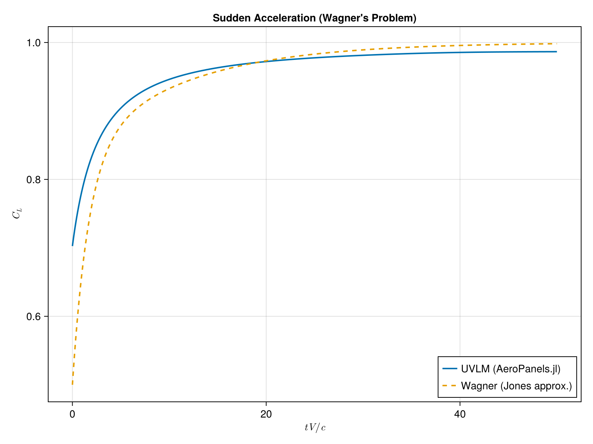
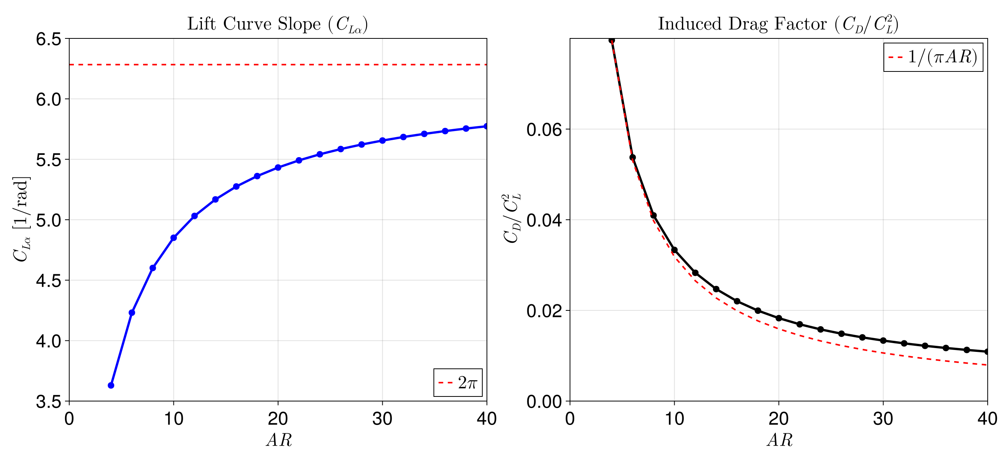

Theory
AeroPanels.jl implements potential flow aerodynamic models using the Vortex Lattice Method (VLM) for both steady and unsteady flows.
Steady Aerodynamics
The steady-state solver is based on a standard 3D Vortex Lattice Method implementation. Lifting surfaces are discretized into a grid of panels, each containing a closed vortex ring (vortex ring elements).
Boundary Condition
The non-penetration (flow tangency) condition is enforced at the collocation points (typically at 75% chord). For a system of $N$ panels, this leads to a linear system of equations:
\[[AIC]\{\Gamma\} = -\{\vec{V}_\infty \cdot \vec{n}\}\]
where $[AIC]$ is the Aerodynamic Influence Coefficient matrix, $\{\Gamma\}$ are the unknown vortex strengths, and $\{\vec{V}_\infty \cdot \vec{n}\}$ is the normal wash due to the freestream velocity.
Kutta Condition
The Kutta condition is satisfied by including a wake that trails from the trailing edge. In the steady case, the wake is modeled as a set of flat vortex rings extending to infinity.
Unsteady Aerodynamics
The unsteady solver implements a Continuous-Time Unsteady Vortex Lattice Method (UVLM). Unlike traditional discrete-time models that use a fixed time step, this approach formulates the aerodynamics as a continuous-time state-space system.
Governing Equations
The model is derived from the transport of vorticity in the wake. As described in Binder (2017) and Werter et al. (2018), the system is expressed as:
\[\dot{\{\Gamma_w\}} = [K_8]\{\Gamma_w\} + [K_9]\{b\}\]
where:
- $\{\Gamma_w\}$ are the wake circulation states.
- $\{b\}$ is the normal wash vector (boundary condition).
- $[K_8]$ represents the transport of vorticity through the wake.
- $[K_9]$ represents the shedding of new vorticity from the trailing edge.
Force Computation
The aerodynamic forces are calculated using the unsteady Bernoulli equation and the Kutta-Joukowski theorem, decomposed into:
- Quasi-steady forces: Due to the local circulation and velocity.
- Unsteady forces (Added Mass): Due to the time derivative of the circulation ($\dot{\Gamma}$).
This continuous-time formulation allows for:
- Integration with standard ODE solvers (e.g.,
OrdinaryDiffEq.jl). - Variable time-stepping.
- Direct linearization for stability and aeroelastic analysis.
Verification
The methods implemented in this package have been verified against classical analytical solutions.
Wagner Problem (Sudden Acceleration)
The unsteady lift buildup on a flat plate following an impulsive start is compared against the Wagner function.

Steady Sweep and Drag
The steady solver has been validated against data from Plotkin and Dimitriadis for swept wings and induced drag predictions.
